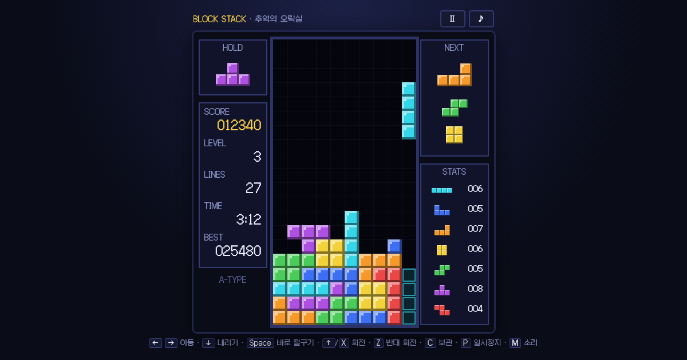

추억의 오락실
그 시절 오락실과 게임기에서 하던 게임을 브라우저로 옮겨 왔습니다.
PC는 키보드로, 휴대폰은 화면 버튼으로 할 수 있어요. 매주 한 편씩 늘어납니다.
-

No.01블록 쌓기
10줄마다 빨라지는 무한 모드와, 바닥에 블록이 깔린 채 시작하는 스테이지 모드.
플레이 ▶ - No.02 · 다음 주에 새 게임이 들어옵니다
그 시절 오락실과 게임기에서 하던 게임을 브라우저로 옮겨 왔습니다.
PC는 키보드로, 휴대폰은 화면 버튼으로 할 수 있어요. 매주 한 편씩 늘어납니다.

10줄마다 빨라지는 무한 모드와, 바닥에 블록이 깔린 채 시작하는 스테이지 모드.
플레이 ▶